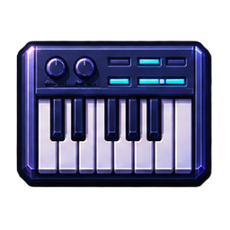
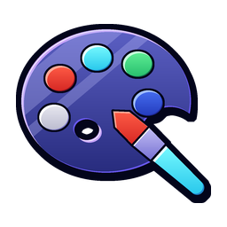
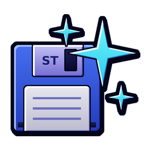
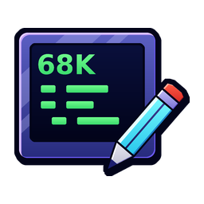
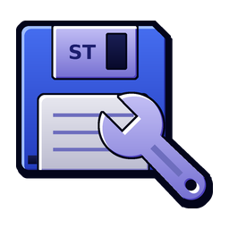
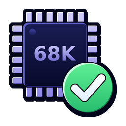

A small selection from a real disk collection. Games are not included with SemaTor.
YOUR DISKS+YOUR DESKTOP+YOUR MUSIC+YOUR IDEAS
01 / A DESKTOP WITH CHARACTER
Make yourself at home.
SemaOS is SemaTor’s own desktop. Open a game, make a tune, browse a disk or keep a note—all in the same place.
RETRO DESKTOP · VIOLET ACCENT
Original, your way.
Violet, teal, amber or crimson accents. A gradient, the retro scene or your own wallpaper. Choose icon and label styles and tune the size of your desktop.
A familiar kind of GEM.
Green desktop. Light windows. Matching icons and a monospace system font. Pick a fine pattern or a plain green background.
Mouse. Keyboard. Gamepad.
Move between windows, search with Find and use gamepad focus to reach the controls. Prefer the classic library? Choose it in Settings.
02 / THERE’S A LOT ON THIS DESKTOP
From “one more game” to “I made this.”
These are working apps inside SemaOS. Every screenshot below comes from the running interface, with demo content identified beneath it.

Create / SemaSynth
Three voices. A whole studio.
Compose with patterns, a song arrangement and editable instruments. Work with the ST sound chip, use a MIDI keyboard on Linux, and export your music.
Built-in Studio demo song.
Pattern & song editors
WAV, YM and SNDH export
MP3 export with a supported encoder

Create / SemaPaint
Think in sixteen colours.
Draw on a 320 × 200 ST canvas with ST or STE palettes. Use a subtle tile grid and snap, selections, transforms and undo. Open supported artwork from a game disk and save the edited picture into a separate disk copy.
Demo artwork opened from a real test disk; Save disk copy keeps the original intact.
16-colour pixel artwork
Supported disk-art import and copy export
Save PI1, NEO and PNG

Create / Maker
Give your picture a life of its own.
Combine a SemaPaint picture, a SemaSynth tune and scrolling text in an ST intro. Save a named project with its picture and music, inspect complete generated assembly, and build a separate floppy image.
An editable intro project using demo artwork.
Picture + music + text
Generated 68000 source
A real ST program on disk

Create / Program Lab
Write for the 68000.
Edit assembly, assemble a program and run it from a disk. Syntax colours, search, undo and saved source files make the desktop a place to build things.
Built-in example program.
Assembly editor
Built-in assembler
Build and run from disk

Explore / Disk Workshop
Get inside the disk.
Browse a disk image, open its files, work with folders and prepare a new ST disk. Move between the workshop and the apps that understand each file.
A demo disk with editable artwork and a README.
Browse and manage files
Undo edits and save a disk copy
Open files in SemaOS apps

Explore / Hardware Check
Ask more of your program.
Run a disk against the available machine configurations and inspect the results. A live test helps you see the program as it runs.
Hardware Check before running a test.
Machine presets
Timed test runs
Live test view
And the things that make a desktop useful.
Jukebox
Play game music and SNDH tunes, organise favourites, trim recordings and send tunes into SemaSynth.
Code Reader
Read a program as 68000 assembly. Follow branches and calls, search addresses and save a listing.
Explorer & Documents
Browse your files and open pictures, music, source and disk images in the app that understands them.
Pictures & Notes
Revisit screenshots, take an image into SemaPaint and keep notes alongside your games.
Details & Statistics
Bring a game’s notes, music and saves together, and keep track of your collection and play time.
Machine & Video
Check the system and display controls available on your platform, including Linux sound and network information.
03 / THE GAMES ARE STILL THE HEART OF IT
Your old favourites. Room to go further.
SemaTor runs original 68000 game code and provides the ST hardware and operating-system interfaces it needs. Bring your disks; no Atari TOS ROM is required.
01
A collection you can use.
Handwritten disk labels or covers. Favourites, compilations, recently added and most played. Search your library, choose a program on a disk and return to a saved session.
02
More than a bigger window.
99 enhancement profiles cover 75 games in 1.1.545. Depending on the title: wider views, gameplay options, controls and companion panels.
CRT presets, phosphors, bezels, Super ST colour, frame generation and Auto HDR options. Availability depends on the game, renderer, GPU and display.
04
Keep your place.
Save states with previews, rewind, disk changes and per-game settings. F11 handles the session; F12 handles the setup.
Compatibility varies by game and disk edition. Enhancement profiles describe specific tested versions; they are not a claim that every ST program works.
Combine the parts, inspect the assembly and build an ST program on disk.
Real ST file formats. Compatibility on physical hardware depends on the program and target machine; test your work on the setup you intend to use.
05 / YOUR NEXT SESSION
Start with your own disks.
Desktop public preview · Version 1.1.545
Keep your library cache, fetch artwork for one window, and enjoy smoother app browsing. This update also fixes the Linux CPU startup requirement. See what changed since 544 →
Expanded creative tools, whole-desktop scaling, complete Retro colour palettes and redesigned Settings. Includes the Windows visibility fix.
Windows x64
Extract into a writable folder. Launch SemaTor.exe, with SDL3.dll beside it.
Use the signed in-app updater. If the older Windows interface is unreadable, extract the new ZIP over your installation, preserving Games, Media, User and Add-ons. Older updater helpers may require a full ZIP update.
What’s included—and what isn’t?
The desktop app, SemaOS and its tools are included. Supply your own game disks. No commercial games or Atari TOS ROMs are bundled. Android and handheld interfaces remain separate development work, not downloads offered here.
Captured from SemaTor’s real public interface on Linux using its offscreen capture harness. Capture versions are recorded in the linked manifest. No interface redraws or generated mockups. The library uses real disk filenames; SemaSynth shows its built-in demo, and Paint/Maker use clearly identified demo artwork. These are interface captures, not claims of completed gameplay tests.